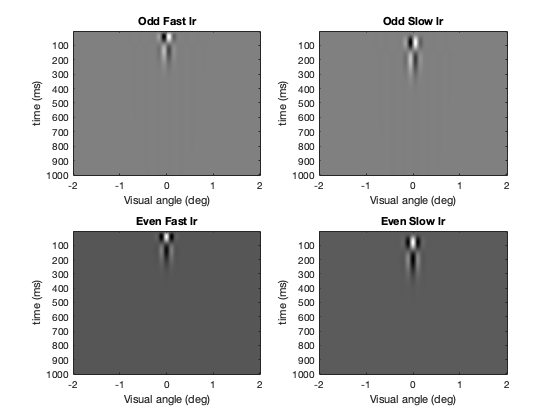
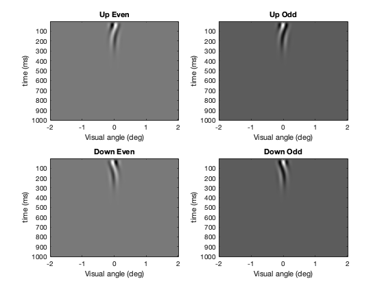
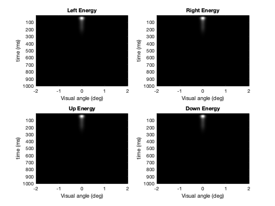
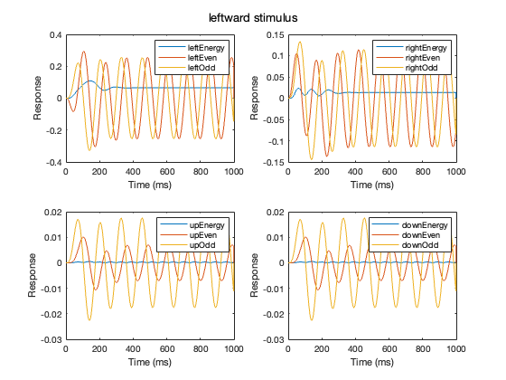
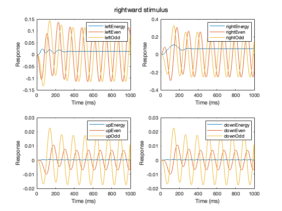
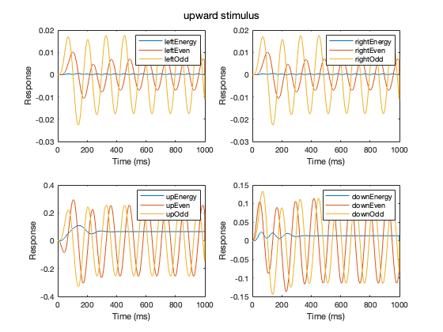
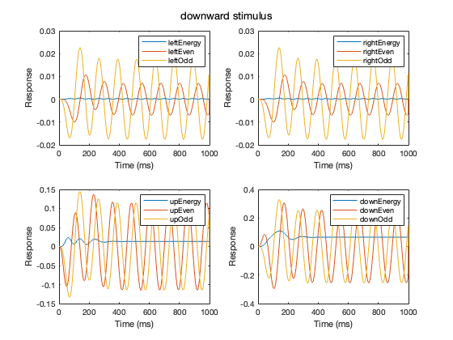

Contents
clear; close all; clc;
a)
Temporal and spatial filters are computed. These filters are then convolved to compute oddFast, oddSlow, evenFast, evenSlow. The orientation of the spatial filters determines the orientation of the convolved outputs. The y-t slices are plotted for horizontal spatial filters and x-t slices are plotted for vertical spatial filters.
tic deltaX = 1/120; % spatial sampling rate x_x = -2:deltaX:2; % spatial array along x axis x_y = -2:deltaX:2; % spatial array along y axis deltaT = 1; % ms duration = 1000; % ms t = 0:deltaT:duration-deltaT; % time-array x = zeros(length(x_x), length(x_y), length(t)); x(241, 241, 1) = 1; % Impulse at center of screen at time = 0 tau = 25; % ms [f1, f2] = time_filters(x, t, deltaT, tau); % computes temporal filters sig = 0.1; % standard deviation of the Gaussian (in deg) sf = 4; % spatial frequency of the sinusoid (in cyc/deg) [evenFilt, oddFilt] = gabor_filter(x_x, sig, sf); % computes spatial filters [oddFastlr, oddSlowlr, evenFastlr, evenSlowlr] = ... conv_filts(f1, f2, oddFilt, evenFilt); % convolution of temporal and horizontal spatial filters figure(); plot_func(oddFastlr, oddSlowlr, evenFastlr, evenSlowlr, 'Odd Fast lr', 'Odd Slow lr', ... 'Even Fast lr', 'Even Slow lr', 'lr') [oddFastud, oddSlowud, evenFastud, evenSlowud] = ... conv_filts(f1, f2, oddFilt', evenFilt'); % convolution of temporal and vertical spatial filters figure(); plot_func(oddFastud, oddSlowud, evenFastud, evenSlowud, 'Odd Fast ud', 'Odd Slow ud', ... 'Even Fast ud', 'Even Slow ud', 'ud')
b)
The metrics computed in (a) are then used to compute Even1, Odd1, Even2, Odd2, Energy1, and Energy2 using motion_energy function, where 1 refers to left or up and 2 refers to right or down determined by the orientation of the spatial filters. As expected, the resulting sums obtained appear to curve in time.
[leftEven, leftOdd, rightEven, rightOdd, leftEnergy, rightEnergy] = ... motion_energy(oddFastlr, oddSlowlr, evenFastlr, evenSlowlr); [upEven, upOdd, downEven, downOdd, upEnergy, downEnergy] = ... motion_energy(oddFastud, oddSlowud, evenFastud, evenSlowud); figure(); plot_func(leftEven, leftOdd, rightEven, rightOdd, 'Left Even', 'Left Odd', ... 'Right Even', 'Right Odd', 'lr') figure(); plot_func(upEven, upOdd, downEven, downOdd, 'Up Even', 'Up Odd', ... 'Down Even', 'Down Odd', 'ud')
c)
The energies computed in (b) are plotted here.
figure(); plot_func(leftEnergy, rightEnergy, upEnergy, downEnergy, 'Left Energy', ... 'Right Energy', 'Up Energy', 'Down Energy', 'energy')
d)
The neuron_responses runs the entire experiment by computing the responses of leftward, rightward, upward, downward oriented neurons for a given series of gratings over time. The gratings are designed using get_grating function that creates a sinusoidal grating in space with the spatial frequency of 4 cyc/deg. Since the spatial scale of the space varies from -2 deg to 2 deg in steps of 1/120 degree. Hence, 4 degrees correspond to 481 pixels. Therefore, the spatial frequency of the sinusoid is 4 cyc/ 481 pixels. Therefore, the time-period of the sinusoid becomes 481/4 ~ 30 pixels/cyc. The sinusoidal grating also moves in time with a frequency of 8Hz = 8 cycles/sec. 1 sec = 1000 ms = 1000 frames. Therefore, in each frame, the sinusoid moves by 1000/8 = 125 frames/cycle. Hence the phase of the sinusoid will change at each time-step by 2*pi/125 in the preferred direction. The sinusoid is then used as an input to compute time_filters which are convolved with the spatial filters to produce neuronal responses and energies.
close all; %clearvars -except oddFilt evenFilt deltaX x_x x_y ; contrast = 100; % contrast of the stimulus phase = 0; % initial phase of the stimulus sf = 30; % cycles/pixel oris = ["lr", "ud"]; % for left-right, and up-down phase_shifts = [2*pi/125, -2*pi/125]; % cycles/frame, positive is left or down, negative is right or up for ori = oris for phase_shift = phase_shifts [leftEven, leftOdd, rightEven, rightOdd, leftEnergy, rightEnergy, ... upEven, upOdd, downEven, downOdd, upEnergy, downEnergy] = ... neuron_responses(x_x, x_y, t, deltaT, tau, contrast, phase, ... phase_shift, sf, ori, oddFilt, evenFilt); figure(); if ori == "lr" if phase_shift > 0 title_st = 'leftward stimulus'; else title_st = 'rightward stimulus'; end else if phase_shift > 0 title_st = 'upward stimulus'; else title_st = 'downward stimulus'; end end plot_energy(t, leftEnergy, leftEven, leftOdd, rightEnergy, rightEven, ... rightOdd, upEnergy, upEven, upOdd, downEnergy, downEven, downOdd, title_st) end end   
As can be seen, the neurons respond highest when the grating is moving in their preferred direction.
toc
Elapsed time is 338.928858 seconds.